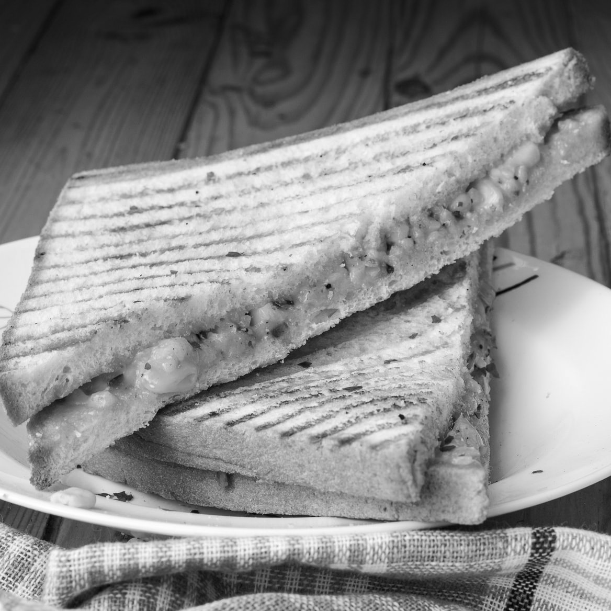
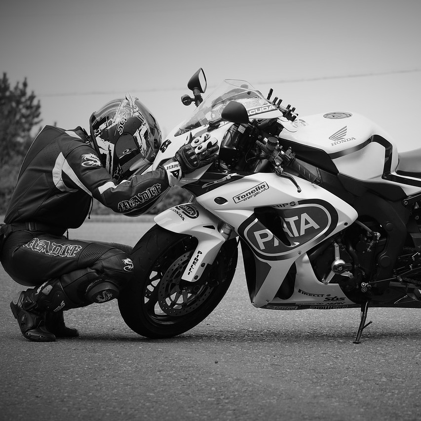

-
Grilled Cheese Please!
Grilled cheese sandwiches are probably my first love. Making and eating grilled cheeses is one of my favorite hobbies. Let's dive into some different ways I like to spice up my grilled cheeses!
-
Wear Your Damn Helmet! (And other thoughts)
Safety is cool -- I'm a really boring motorcycle rider. Let me tell you about the time I bought a motorcycle and then made a 15 slide powerpoint presentation on motorcycle safety in an effort to reassure my parents.
-
Rock Climbing is Cool I Guess
Rock climbing is cool. I haven't figured out which direction to go on this. I have lots of feelings about climbing. I guess we'll see? \_('.')_/